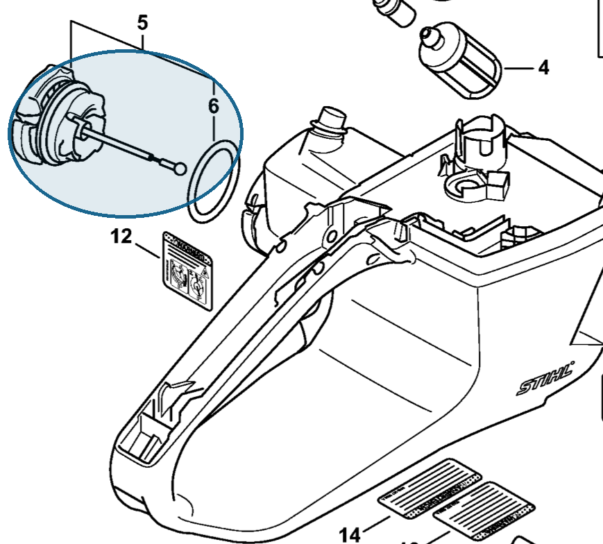
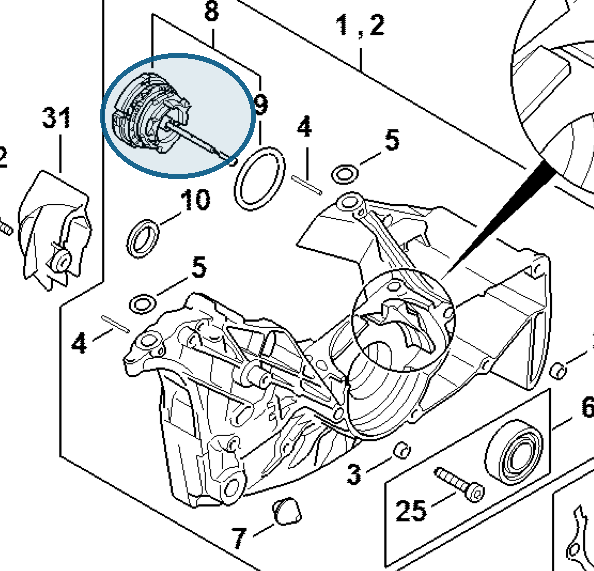

Filler cap
0000 350 0533
MS 462 — fuel tank
Fuel filler cap; includes seal (item 6). The same part is used on the oil tank.
Item 5 Qty listed: 1

MS 462 C-M Z spare-parts list, 10/29/2024. Drawing p. 23; parts table p. 24.
MS 462 — oil tank
Oil filler cap in the crankcase; includes seal (item 9). Also listed in crankcase section B, table p. 7.
Item 8 Qty listed: 1

MS 462 C-M Z spare-parts list, 10/29/2024. Drawing p. 3; parts table p. 4.